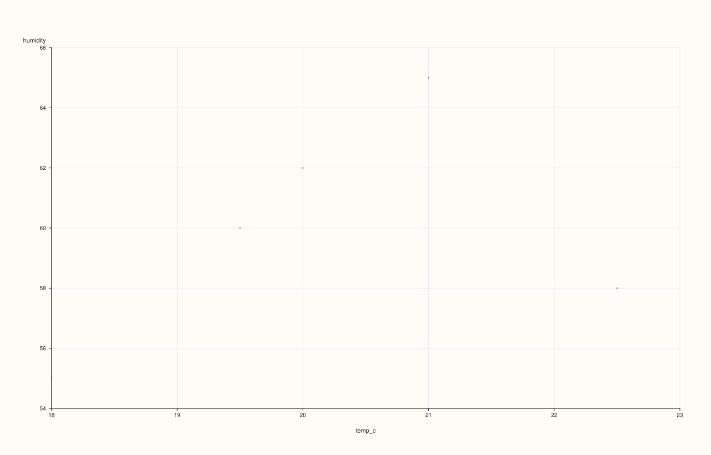
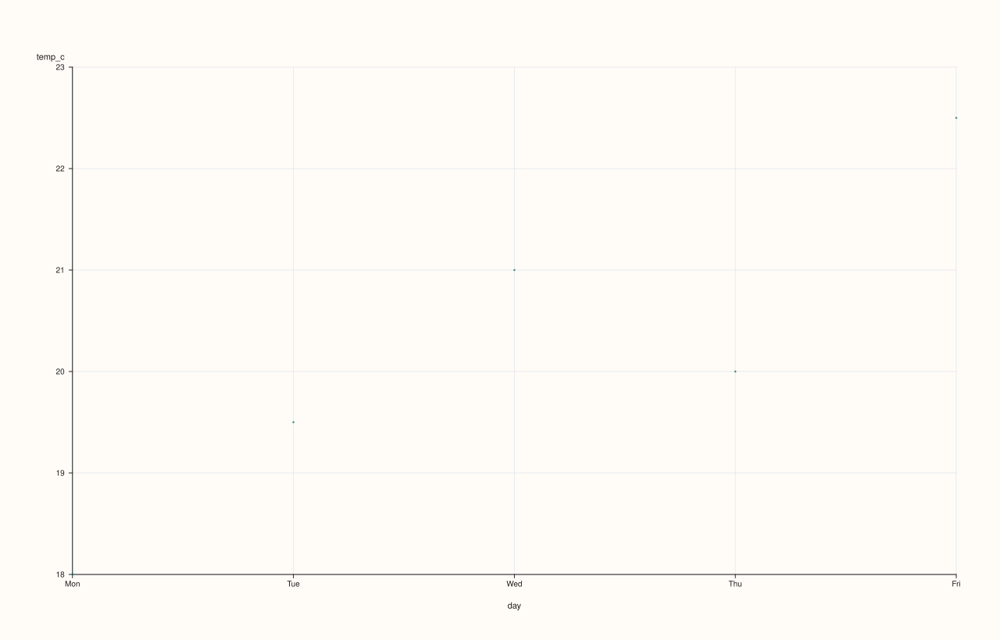
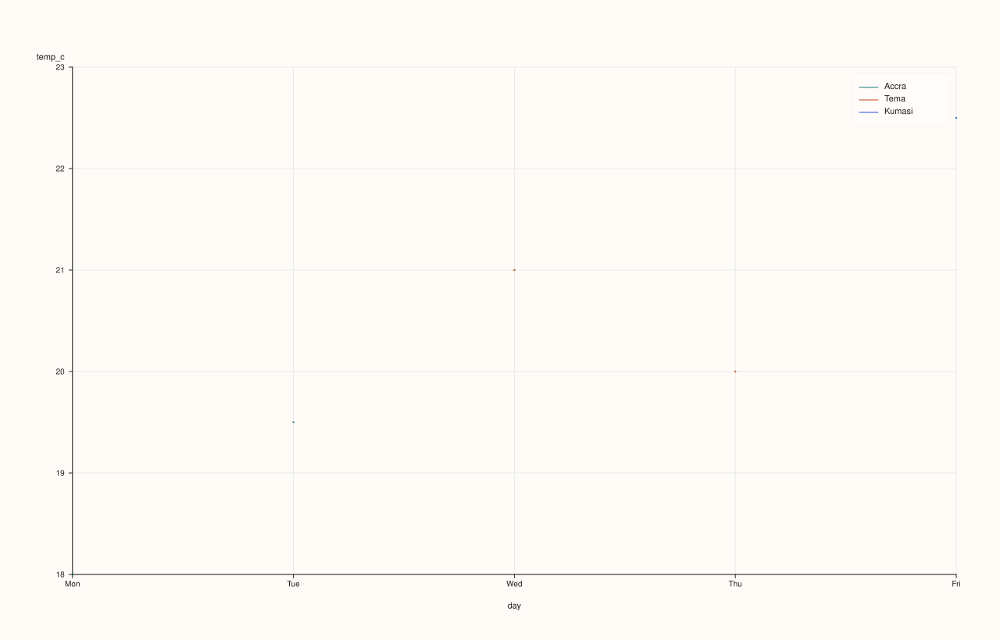
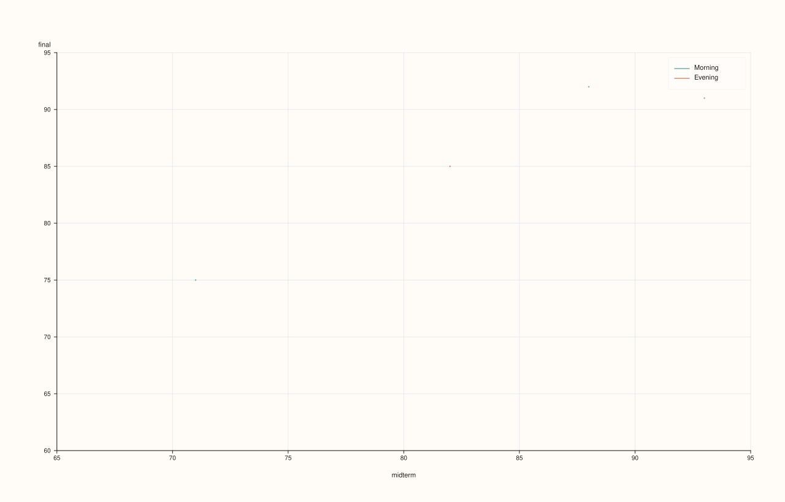

CatalogPlotAccessor::scatter¶
Back to CatalogPlotAccessor API Reference
Signatures¶
CatalogPlotAccessor::scatter(std::string_view x_key,
std::string_view y_key,
std::optional<std::string_view> hue_key = std::nullopt) const -> pluss::pl::Studio
CatalogPlotAccessor::scatter(std::string_view x_key,
std::string_view y_key,
std::optional<std::string_view> hue_key,
const pluss::table::ScatterPlotOptions& options) const -> pluss::pl::Studio
CatalogPlotAccessor::scatter(std::string_view x_key,
std::string_view y_key,
std::optional<std::string_view> hue_key,
const CatalogScatterPlotOptions& options) const -> pluss::pl::Studio
What It Does¶
Draws one point per aligned (x_key, y_key) pair, optionally split into separate,
distinctly colored/labeled point groups by a categorical hue_key. x_key/y_key are
required, plain (non-optional) arguments, same as
DataFramePlotAccessor::scatter — there is no row-label
fallback here.
Important
Two entirely different code paths, chosen by x_key’s thread kind
Unlike line()/step()/area()/bar() (which all share one x-axis-resolution helper),
scatter() branches on x_key’s own thread kind:
If
x_keyresolves to a Note, Timeline, or TimeIndex key, it’s treated as a labeled axis: positions are0..n-1, tick labels come fromx_key’s own values, andy_key(which must be the same length) is read positionally against those same indices — no alignment machinery runs at all. See Examples 2 and 3.If
x_keyresolves to a plain Series key, it’s treated as a genuinely numeric x-axis, andx_key/y_keyare reconciled through the same pairwise-alignment machinerycorr_heatmap()/scatter_matrix()use (CatalogPairAlignOptions/PairAlign/PairAlignBy) — by position (truncated to the shorter of the two, default) or by each stream’s own attached label, with rows dropped wherever either value is non-finite. This is the only branch the three-argumentCatalogScatterPlotOptionsoverload’salignfield actually affects. See Examples 1, 4, and 5.
Important
hue_key has its own default-resolution and a stricter type requirement
hue_key resolves the same way x_key resolves elsewhere on this accessor: an explicit
argument wins, otherwise options.default_hue_feature (set via ct.plot(options)) is used
if present, otherwise there’s no hue at all. A resolved hue_key must already be
Note-, Timeline-, or TimeIndex-kind — a plain numeric key throws "Catalog::plot().scatter: hue key '<name>' must be note-like or time-like". See Example 6.
Parameters¶
x_key (std::string_view, required)
The key for the horizontal axis. Its thread kind decides which alignment path is taken
— see the important callout above.
y_key (std::string_view, required)
The key for the vertical axis.
hue_key (std::optional<std::string_view>, default std::nullopt)
Optional categorical key to split points into separate colored/labeled groups. Must
resolve to a Note-, Timeline-, or TimeIndex-kind key if present — see the important
callout above.
options (pluss::table::ScatterPlotOptions or CatalogScatterPlotOptions)
```cpp
struct ScatterPlotOptions {
double alpha{0.92};
double line_width{1.1};
bool fit_line{false};
std::int64_t fit_order{1};
bool fit_ci{false};
double fit_confidence_level{0.95};
};
struct CatalogPairAlignOptions {
PairAlign align{PairAlign::PairwiseInner}; // PairwiseInner | GlobalInner
PairAlignBy align_by{PairAlignBy::Auto}; // Auto | Label | Pos
};
struct CatalogScatterPlotOptions {
CatalogPairAlignOptions align{};
pluss::table::ScatterPlotOptions scatter{};
};
```
Passing a bare `ScatterPlotOptions` (the second overload) is equivalent to passing a
`CatalogScatterPlotOptions` with default-constructed `align` and that `scatter` value —
it exists purely so a caller who doesn't care about alignment doesn't have to spell out
the wrapper struct. `fit_line`/`fit_order`/`fit_ci`/`fit_confidence_level` are accepted
for shape-compatibility with `DataFramePlotAccessor::scatter` but are **not** read by
`Catalog::plot().scatter()` — no fit line is ever drawn here, regardless of these fields.
`align`/`align_by` only affect the numeric-pair branch (plain `Series` `x_key`) — they
have no effect when `x_key` resolves to a labeled-axis key.
Returns¶
pluss::pl::Studio
A figure with one pane: a single point trace with no hue, or one point trace per
distinct hue value (each its own color, with a legend) when hue_key resolves to
something.
Examples¶
Example 1. Plain numeric x_key: the pairwise-alignment branch, no hue. Both streams are
the same length with no attached labels, so PairwiseInner/positional alignment keeps every
point.
using namespace pluss::kindle::literals;
auto readings = pluss::kindle::Catalog({
"temp_c"_k = pluss::kindle::Stream(pluss::make_series({18.0, 19.5, 21.0, 20.0, 22.5})),
"humidity"_k = pluss::kindle::Stream(pluss::make_series({55.0, 60.0, 65.0, 62.0, 58.0})),
"day"_k = pluss::kindle::Stream(pluss::make_note({"Mon", "Tue", "Wed", "Thu", "Fri"})),
"city"_k = pluss::kindle::Stream(pluss::make_note({"Accra", "Accra", "Tema", "Tema", "Kumasi"})),
});
auto chart = readings.plot().scatter("temp_c", "humidity");
chart.show();

Example 2. A Note-kind x_key: the labeled-axis branch — positions 0..4, tick labels from
day, temp_c read positionally.
using namespace pluss::kindle::literals;
auto readings = pluss::kindle::Catalog({
"temp_c"_k = pluss::kindle::Stream(pluss::make_series({18.0, 19.5, 21.0, 20.0, 22.5})),
"humidity"_k = pluss::kindle::Stream(pluss::make_series({55.0, 60.0, 65.0, 62.0, 58.0})),
"day"_k = pluss::kindle::Stream(pluss::make_note({"Mon", "Tue", "Wed", "Thu", "Fri"})),
"city"_k = pluss::kindle::Stream(pluss::make_note({"Accra", "Accra", "Tema", "Tema", "Kumasi"})),
});
auto chart = readings.plot().scatter("day", "temp_c");
chart.show();

Example 3. Same labeled-axis branch, with a hue_key: points split into one trace per
distinct city value, in order of first appearance.
using namespace pluss::kindle::literals;
auto readings = pluss::kindle::Catalog({
"temp_c"_k = pluss::kindle::Stream(pluss::make_series({18.0, 19.5, 21.0, 20.0, 22.5})),
"humidity"_k = pluss::kindle::Stream(pluss::make_series({55.0, 60.0, 65.0, 62.0, 58.0})),
"day"_k = pluss::kindle::Stream(pluss::make_note({"Mon", "Tue", "Wed", "Thu", "Fri"})),
"city"_k = pluss::kindle::Stream(pluss::make_note({"Accra", "Accra", "Tema", "Tema", "Kumasi"})),
});
auto chart = readings.plot().scatter("day", "temp_c", "city");
chart.show();
Three groups are drawn — "Accra", "Tema", "Kumasi" — in the order those values first
appear (rows 0/1, 2/3, 4), not sorted alphabetically. A legend labeled with each city is
shown automatically.

Example 4. An explicit ScatterPlotOptions on the numeric-pair branch.
using namespace pluss::kindle::literals;
auto readings = pluss::kindle::Catalog({
"temp_c"_k = pluss::kindle::Stream(pluss::make_series({18.0, 19.5, 21.0, 20.0, 22.5})),
"humidity"_k = pluss::kindle::Stream(pluss::make_series({55.0, 60.0, 65.0, 62.0, 58.0})),
});
pluss::table::ScatterPlotOptions scatter_options;
scatter_options.alpha = 0.6;
scatter_options.line_width = 1.5;
auto chart = readings.plot().scatter("temp_c", "humidity", std::nullopt, scatter_options);
chart.show();
Example 5. CatalogScatterPlotOptions with align = GlobalInner and align_by = Label:
two streams of different lengths, each carrying its own label, aligned by matching label
values rather than truncated by position.
using namespace pluss::kindle::literals;
auto x_stream = pluss::kindle::Stream(pluss::make_series({10.0, 20.0, 30.0, 40.0, 50.0, 60.0}))
.with_label(pluss::table::Thread(pluss::make_note({"a", "b", "c", "d", "e", "f"})));
auto y_stream = pluss::kindle::Stream(pluss::make_series({1.0, 2.0, 3.0, 4.0}))
.with_label(pluss::table::Thread(pluss::make_note({"b", "c", "e", "f"})));
auto paired = pluss::kindle::Catalog({"x_metric"_k = x_stream, "y_metric"_k = y_stream});
pluss::kindle::CatalogScatterPlotOptions options;
options.align.align = pluss::kindle::PairAlign::GlobalInner;
options.align.align_by = pluss::kindle::PairAlignBy::Label;
auto chart = paired.plot().scatter("x_metric", "y_metric", std::nullopt, options);
chart.show();
x_metric has 6 values labeled "a".."f"; y_metric has 4 values labeled "b", "c",
"e", "f". With align_by = Label, only the 4 labels present in both streams
("b", "c", "e", "f") survive — x_metric’s "a" and "d" rows are dropped, and
every y_metric row is kept.

Example 6. The hue type-requirement throw: a purely numeric hue_key is rejected.
using namespace pluss::kindle::literals;
auto readings = pluss::kindle::Catalog({
"temp_c"_k = pluss::kindle::Stream(pluss::make_series({18.0, 19.5, 21.0, 20.0, 22.5})),
"humidity"_k = pluss::kindle::Stream(pluss::make_series({55.0, 60.0, 65.0, 62.0, 58.0})),
"day"_k = pluss::kindle::Stream(pluss::make_note({"Mon", "Tue", "Wed", "Thu", "Fri"})),
});
try {
auto bad = readings.plot().scatter("day", "temp_c", "humidity");
} catch (const std::exception& e) {
std::cout << e.what();
}
Output¶
Catalog::plot().scatter: hue key 'humidity' must be note-like or time-like
Example 7. An unknown x_key throws.
using namespace pluss::kindle::literals;
auto readings = pluss::kindle::Catalog({
"temp_c"_k = pluss::kindle::Stream(pluss::make_series({18.0, 19.5, 21.0, 20.0, 22.5})),
});
try {
auto bad = readings.plot().scatter("nope", "temp_c");
} catch (const std::exception& e) {
std::cout << e.what();
}
Output¶
Catalog::plot().scatter: unknown x key 'nope'
Notes¶
x_key/y_keyare required, non-optional arguments — there is no fallback the wayline()/bar()/etc. have for a single axis.x_key’s thread kind picks the code path — see the important callout above. This is a meaningful difference fromDataFrame::plot().scatter, which always treats both features as plain numeric columns.align/align_by(viaCatalogScatterPlotOptions) only take effect on the numeric-pair branch — see Example 5 andcorr_heatmap()/scatter_matrix()for the same alignment machinery used elsewhere.fit_line/fit_order/fit_ci/fit_confidence_levelonScatterPlotOptionsare accepted but unused here — no fit line is ever drawn.hue_keyresolves throughoptions.default_hue_featurethe same wayx_keyresolves throughdefault_x_featureon the other methods, but must be Note-, Timeline-, or TimeIndex-kind or the call throws.Hue groups are ordered by first appearance in the data, not sorted.
Returns a
pluss::pl::Studio— seeline()’s important callout for how to view or save the result.
See Also¶
CatalogPlotAccessor::line: the canonical explanation of this accessor’s shared mechanics.CatalogPlotAccessor::scatter_matrix: every pairwise combination of several keys at once, reusing the same alignment machinery as this method’s numeric-pair branch.CatalogPlotAccessor::corr_heatmap: a correlation summary over the same kind of pairwise-aligned key pairs.